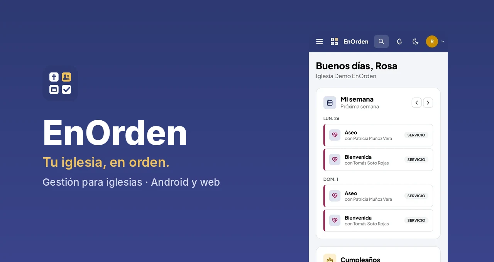
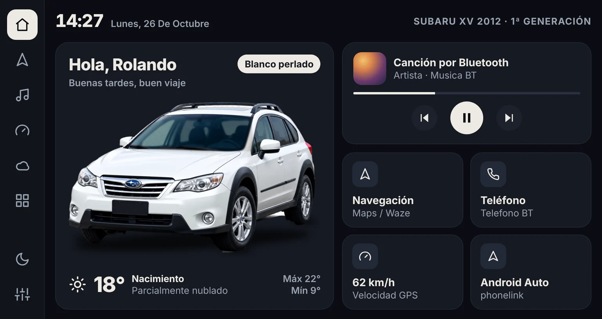

09/2025 – 05/2026
Fullstack Engineer Senior · Kibernum
Creación e integración de servicios para la plataforma de acciones de BancoEstado.
Más de 8 años desarrollando soluciones backend y fullstack para banca, seguros y medios de pago, con Node.js, NestJS, Java Spring Boot y .NET. He liderado equipos técnicos, tomado decisiones de arquitectura y llevado productos propios desde la idea hasta producción.
Productos que diseñé, programé y puse en uso de punta a punta.

Plataforma SaaS multi-iglesia con 14 módulos (miembros, finanzas, alabanza, agenda…), app Android, versión web y planes de pago. En producción en enordenapp.cl.
Ver caso →
Launcher a medida para la radio Android de un Subaru XV 2012: música Bluetooth, velocímetro GPS, clima por ubicación y temas. Incluye la integración con el servicio Bluetooth propio del fabricante.
Ver caso →Creación e integración de servicios para la plataforma de acciones de BancoEstado.
Líder técnico del tarificador de seguros automotrices de Reale (parrilla de precios por plan y deducible). Desarrollo fullstack de la Declaración Personal de Salud para una aseguradora y mantenimiento evolutivo de sistemas de Bupa Chile.
Nuevos servicios para las plataformas de medios de pago de la empresa.
Desarrollo backend en Node.js para requerimientos y corrección de sistemas de Bupa Chile.
Marketplace de cotizaciones y órdenes de compra para Sercotec, portal de órdenes, e-vouchers y giftcards para Sodexo. Para Reale: tarificador automotriz, integración con ComparaOnline, servicio SOAP para Santander y cotizador de Responsabilidad Civil y Accidentes Personales.
App Android para encuestas en plantas de celulosa con su visor web. Sistema interno de control y gestión del molino, redes y soporte.
Ingeniería en Ejecución en Computación e Informática, Instituto Profesional Virginio Gómez (2017). Cursos de Angular con Firebase, MEAN y React Native.
Estoy abierto a proyectos y oportunidades de backend, fullstack o liderazgo técnico.